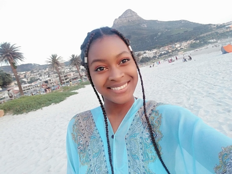

 Peggy
Mailula
Which City?
Tokyo
 Tokyo embraces the modern living, while mantaining a stunning blend of amazing culture, rich history and
traditional experiences. The city is bursting with
ancient shrines, castles and temples, historic monuments and architecture,
plus cultural carnivals of all kinds. Tokyo offers a unique opportunity for indigenous adventure draped round a far-fetched cultural experience.Vending machines are available in Tokyo at every 12 meter distance. You can buy anything from hamburgers to clothes,
candies to cold drinks, Milk packs to ice cream the list goes on!
Tokyo embraces the modern living, while mantaining a stunning blend of amazing culture, rich history and
traditional experiences. The city is bursting with
ancient shrines, castles and temples, historic monuments and architecture,
plus cultural carnivals of all kinds. Tokyo offers a unique opportunity for indigenous adventure draped round a far-fetched cultural experience.Vending machines are available in Tokyo at every 12 meter distance. You can buy anything from hamburgers to clothes,
candies to cold drinks, Milk packs to ice cream the list goes on!
Tokyo Is One Of The Safest Cities To Travel To. Crimes against tourists are extremely rare. It actually has one of the lowest crime rates per capita of any major city in the world.On the
whole Japanese people don’t speak many other languages and whilst Tokyo is a very large city, English is not widely spoken. Ordering goods or services, booking a cinema ticket or even arrange medical treatments can be very difficult if you do not know any Japanese, so it is essential to learn the basics of the language.